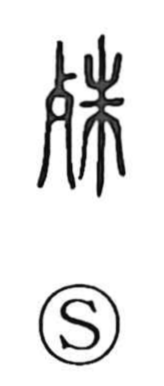

殊

Uncategorized
Kun: koto, kotonaru, koto ni | On: shu
special ・ different ・ exceptional ・ particularly ・ especially ・ to excel
Explanation
Shirakawa interprets 殊 as a phono‑semantic character, with 朱 supplying the sound value shu. Its sense is clearly shown in early literature: in the Book of Odes (Wei Feng, Fenjuru), the phrase 殊異 describes someone as remarkable or outstanding. From this core idea of standing apart, the character expresses “to be different” and “to excel in a special way,” and in adverbial use it means “particularly, especially.” By extension it can also refer to specific circumstances or particulars, and it can take on an intensifying nuance of “very much.”